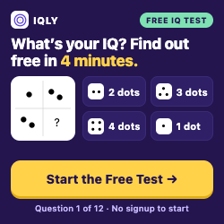
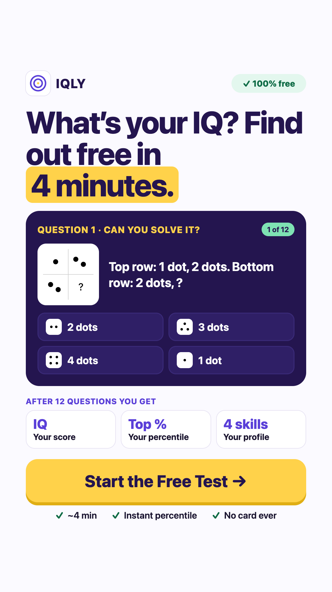
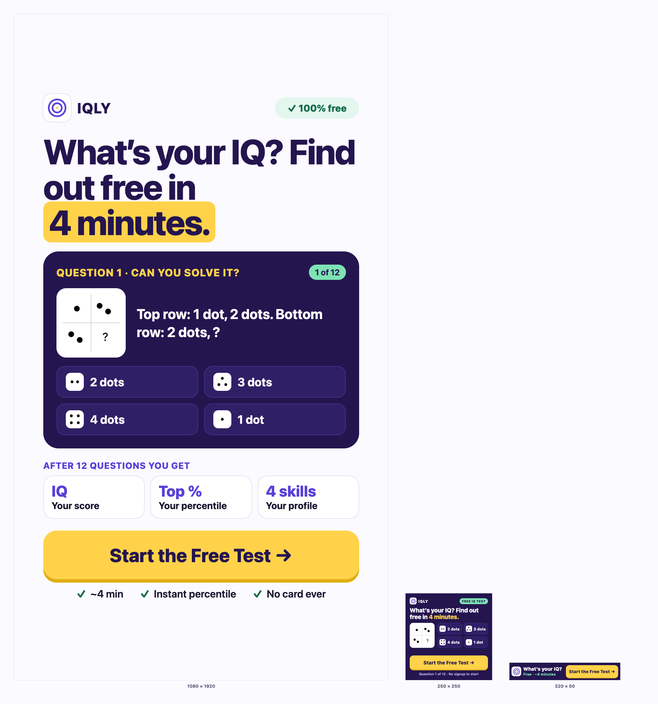
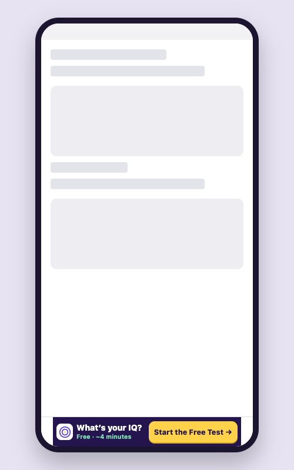
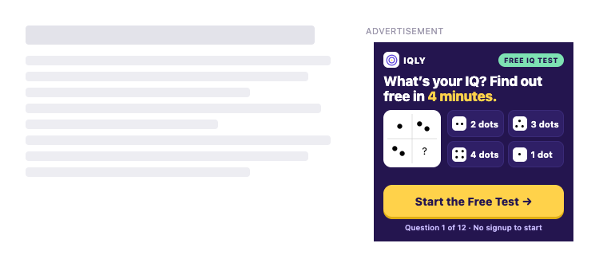
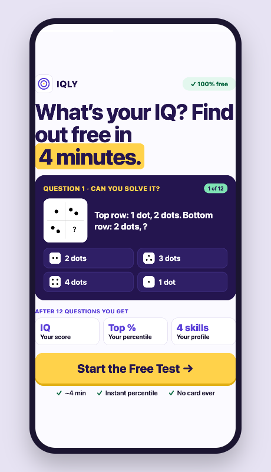
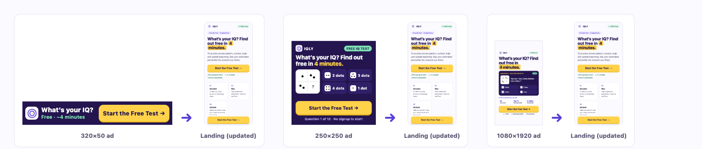

All three creatives target the same audience as the brief: cold Google Search and Display traffic with zero prior trust in or awareness of IQly. Each placement has a different job dictated by its own attention span — a sub-second glance for the 320×50 banner, a few seconds of idle scrolling for the 250×250 square, and a full-screen swipe decision for the 1080×1920 story — so each uses a different mechanism (outcome hook, participation challenge, hook→participation→payoff→action) to earn the click. The thread that ties all three together, and to the landing page, is continuity: I designed the ads first in Claude Design, then aligned the ads to the live landing so the same promise runs on both sides of the click: all three use the landing's CTA, "Start the Free Test →," and the headline "What's your IQ? Find out free in 4 minutes." appears in full on the 250×250 and 1080×1920 and in its first half ("What's your IQ?") on the 320×50, where the strip has no room for more. One deliberate exception: the landing's "Free IQ Test" eyebrow tag, which stays visible above the fold because this same page also receives Google Search traffic for that exact keyword phrase — the ads win on message, but Search match isn't sacrificed to get it.
Mobile banners get under a second of attention, so the strip carries one question and one action. "What's your IQ?" is an outcome hook — the viewer answers it in their head and feels the gap — which pulls harder than the product label "IQ Test." The green line "Free · ~4 minutes" answers the two biggest objections (cost, time) before the viewer can raise them, and says nothing that the flow does not deliver. The CTA, "Start the Free Test →," is the landing's own button copy, in the same yellow, against a deep-purple background that stands out from white publisher pages.
320×50 px · 6.4 KB (target ≤150KB) · logo + hook + landing CTA · contrast verified

Nobody is searching for an IQ test on display inventory, so the square has to create intent rather than answer it. It carries the landing's headline, "What's your IQ? Find out free in 4 minutes.," and then makes it concrete: the real Question 1 sits right underneath with its four real answers, so viewers start solving before they decide to click. The CTA, "Start the Free Test →," is the landing's own button copy; a green "Free IQ test" badge and "Question 1 of 12 · No signup to start" answer cost and data up front, and "No signup to start" is exactly what the flow does.
250×250 px · 17.7 KB (target ≤150KB) · safe zone: 16px margin respected · contrast verified

Full-screen placements give the most space but the least patience, so the layout follows a swipe decision's natural order. Hook: a 100px headline puts the outcome, the price and the time cost into one read. Participation: the real Question 1 card with all four answers and a "1 of 12" chip proves the test is short. Payoff: "After 12 questions you get" shows the IQ score, percentile and 4-skill profile as something concrete, not a vague quiz. Action: the same yellow "Start the Free Test →" as the landing sits as a 140px bar in the thumb zone, with three true reassurances underneath. The story is deliberately light, not dark like the two banners: it is a near-exact mirror of the light landing screen, so the visitor lands on a page that looks like the ad they just tapped, while the dark banners stand out against white publisher pages.
1080×1920 px · 130.7 KB · safe zone: 230px top / 300px bottom clear · contrast verified

No independent scaling: every pixel represents the same physical size, which is why the 1080×1920 story dwarfs the two banner formats.



Neutral, unbranded placeholder UI (no real publisher or app logos) — the 320×50 anchored at the bottom of a generic app screen, the 250×250 in a generic article sidebar, the 1080×1920 as a full-screen story on a generic phone frame.

Each creative next to the updated landing screen (390px): the CTA reads identically on both sides of the click, and the headline matches in full on the 250×250 and 1080×1920 and by its first half on the 320×50.